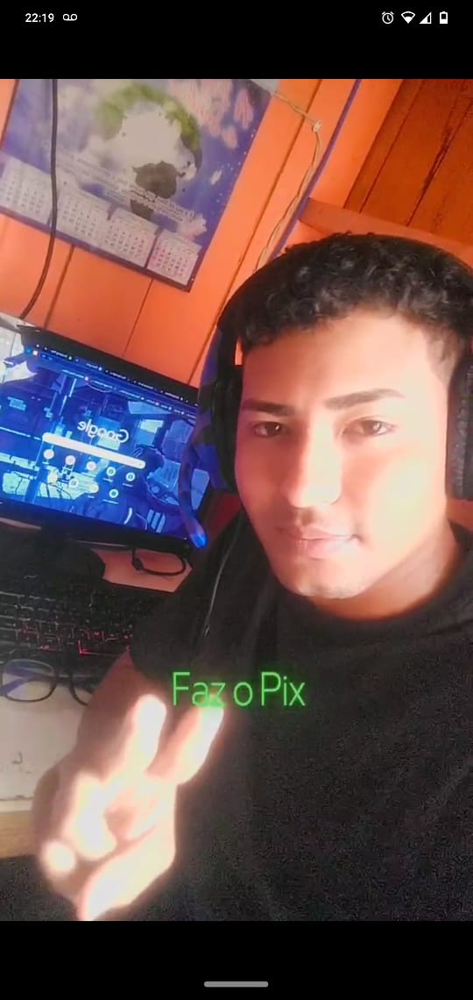
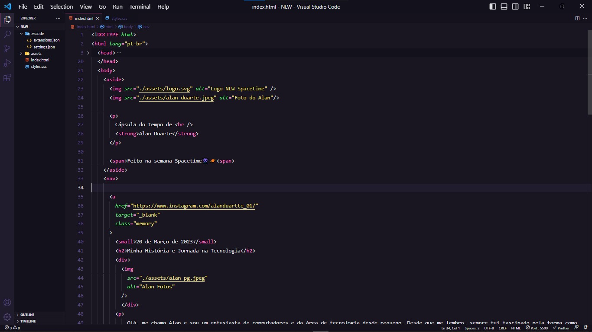

Biografia

Desde criança, tive curiosidade em descobrir como os computadores processam informações e como eles são capazes de realizar tarefas complexas em questão de segundos. Essa paixão me impulsionou a estudar e me aprofundar cada vez mais nesse universo.
Ao longo dos anos, tive a oportunidade de aprender sobre programação, hardware, redes de computadores e outras áreas relacionadas. Cada novo conhecimento adquirido apenas aumentava minha empolgação e motivação para explorar ainda mais o vasto campo da tecnologia.
Loading...

Hoje, posso dizer com orgulho que a minha paixão pela computação e tecnologia me levou a seguir uma carreira nessa área. Trabalhar com computadores e acompanhar o constante avanço tecnológico é uma verdadeira realização para mim. Sou grato por ter a oportunidade de me dedicar a algo que amo e que está em constante evolução.
futuro da tecnologia é emocionante e estou ansioso para ver as inovações que ainda estão por vir. Enquanto isso, continuarei aprendendo, explorando e compartilhando meu amor pelos computadores e pela área de tecnologia com outras pessoas, na esperança de inspirar e despertar o mesmo fascínio que sinto.